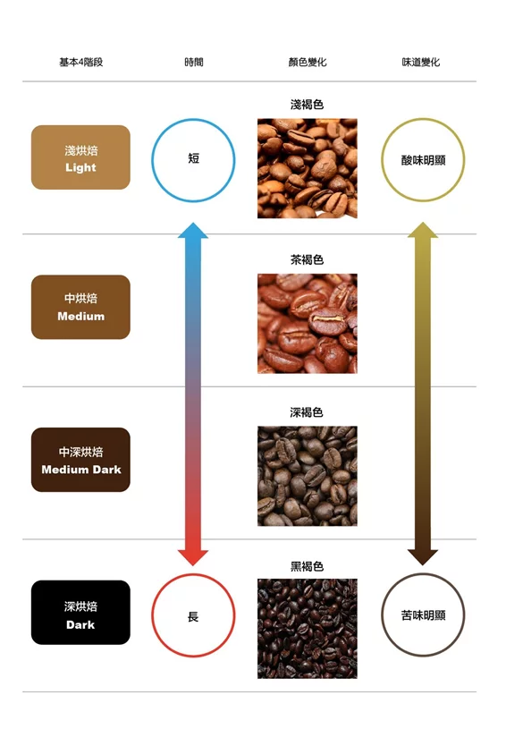
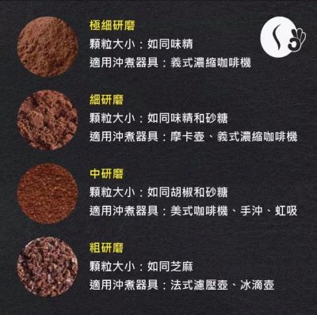
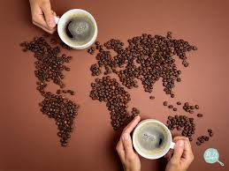

咖啡知識

烘焙程度：
- 淺焙（Light Roast）：焙度較淺，咖啡豆呈現較淺的顏色，風味較酸，帶有較多的果香和花香。
- 中焙（Medium Roast）：咖啡豆顏色較深，味道更加平衡，保留了部分果香，同時具有一定的焦糖味。
- 中深烘焙（Medium Dark Roast）:意思是比中烘焙顏色稍為深一點。此種烘焙會帶有深棕色斑點，外觀已經可以看到油脂。
- 深焙（Dark Roast）：焙度最深，咖啡豆表面呈現較深的顏色，風味濃郁，具有較強的焦糖和苦味，常見於拿鐵等濃縮咖啡。

研磨方法：
- 極細研磨:義式濃縮咖啡機等需要高壓沖泡的方法。極細研磨的咖啡顆粒極小，能夠與水更充分地接觸，從而提取出更多的風味和香氣成分。
- 細磨：適合用於濃縮咖啡機、義式咖啡壺等需要短時間內完成的沖泡方式。細磨的咖啡顆粒較細，有助於快速且均勻地萃取咖啡。
- 中磨：適合用於手沖壺、濾泡式咖啡機等沖泡方式。中磨的咖啡顆粒適中，能平衡風味和提供適當的萃取速度。
- 粗磨：適合用於法式壓壺、濾杯等需要長時間沖泡的方式。粗磨的咖啡顆粒較大，能更好地釋放風味。
咖啡文化

各國咖啡文化
- 土耳其：咖啡是土耳其文化的核心，土耳其咖啡以研磨細軟、加入大量糖和糖漿烹煮、不濾渣並常用於占卜等特色而著稱。
- 義大利：義大利人對濃縮咖啡的喜愛是其咖啡文化的代表，除了濃縮咖啡外，卡布奇諾和拿鐵也是其咖啡文化的重要組成部分。
- 越南：越南咖啡文化注重於人際關係和社交，越南式咖啡以烘焙深度和添加糖分等特點為人所知，而各種變化豐富的越南咖啡也展現了其獨特之處。
- 奧地利：維也納咖啡文化被聯合國教科文組織列為非物質世界文化遺產，奧地利人喜愛在咖啡廳中閱讀、放鬆和社交，這種生活方式成為了維也納市民的一部分。
- 美國：美國人對於咖啡的喜愛體現了其率性、自由和展現自我的特質，美式咖啡的流行和咖啡連鎖店的普及也塑造了其獨特的咖啡文化。
- 韓國：韓國的咖啡文化起源於特定文化族群的融合，而三合一咖啡的流行則體現了韓國人快節奏生活方式的特點。
- 日本：日本的咖啡文化受到荷蘭引進咖啡的影響，日式咖啡文化注重於口感柔順、甘醇味的表現，咖啡廳也成為了日本人放鬆和社交的場所。